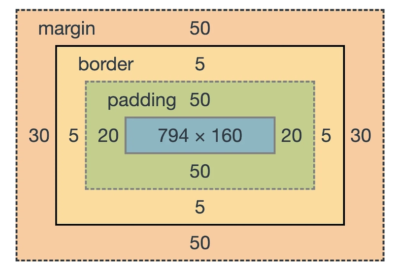

Welcome to the tutorial!
This tutorial is designed to help you learn the basics of Website Development using three core web technologies: HTML, CSS, and Javascript. Click on the links below to jump to each topic, or read through the tutorial in order.
HTML
HTML stands for HyperText Markup Language. It is the standard markup language used to create web pages. HTML describes the structure of a web page using a series of elements and tags. Each element has a specific purpose and can contain text, images, links, and other media. HTML is the backbone of every website and is essential for creating a well-structured and accessible web page. HTML was originally defined by TIM Berners-Lee. HTML5 was a significant revamp.
1.1 HTML5 Philosophy
-
Interoperability - should be renderable on a wide variety of browser.
-
Graceful error recovery - small errors should not stop the page from rendering.
-
Backwards compatibility - new features should not break the web.
-
Prioritize users - User > Web dev > browser implementer > theorists
-
Separation of concerns - describe the type of information, not how it displays.
1.2. Document Structure
Every HTML document follows the same skeleton. The <!DOCTYPE html> declaration tells the browser this is an HTML5 document. Inside the <html> root element sit exactly two children, which are <head> for metadata like the page title and CSS links, and <body> for everything visible on the page.
<!DOCTYPE html>
<html lang="en">
<head>
<meta charset="UTF-8">
<title>My Page</title>
<link rel="stylesheet" href="style.css">
</head>
<body>
<h1>Hello World</h1>
<p>This is a paragraph.</p>
</body>
</html>Additional Note
Always include lang="en" on the <html> tag. Screen readers use it to select the correct pronunciation engine, and search engines use it to serve the right audience.
1.3 Common Elements
HTML provides a set of elements for structuring text content. Headings range from
<h1> (most important) to <h6>
(least important) and should follow a logical hierarchy. It is good practice to follow the heading hierarchy. Paragraphs use
<p>, and emphasis can be added with
<em> for italic or <strong>
for bold.
<h1>Main heading</h1>
<h2>Subheading</h2>
<p>A paragraph with <em>emphasis</em> and <strong>bold</strong> text.</p>
<!-- Unordered list -->
<ul>
<li>Item one</li>
<li>Item two</li>
</ul>
<!-- Ordered list -->
<ol>
<li>First step</li>
<li>Second step</li>
</ol>1.4 Links and Images
Links are created with the <a> tag using the
href attribute. When linking within your own site always
use relative paths so that they won't break if you move the project to a different
server. Images use the self-closing <img> tag and
always need an alt attribute for accessibility.
<!-- Relative link (same site) -->
<a href="./quiz.html">Go to Quiz</a>
<!-- Absolute link (external site) -->
<a href="https://www.google.com">Google</a>
<!-- Image with alt text -->
<img src="./assets/photo.jpg" alt="Description of the image">Additional Note
Never leave alt empty
unless the image is purely decorative. Screen readers skip empty alt attributes, but a
missing one entirely will read out the full file path — useless to a visually impaired user.
1.5 Tables
Tables are used to display data in rows and columns. The <table>
element wraps everything. Each row uses <tr>, header cells use
<th>, and data cells use <td>.
<table>
<tr> <!-- header row -->
<th>Name</th> <!-- header column -->
<th>Age</th> <!-- header column -->
</tr>
<tr> <!-- first data row -->
<td>Alice</td> <!-- data column -->
<td>22</td> <!-- data column -->
</tr>
<tr> <!-- second data row -->
<td>Bob</td> <!-- data column -->
<td>25</td> <!-- data column -->
</tr>
</table>Additional Note
Only use tables for tabular data, never to layout a page. Tables used for layout will break screen readers, are hard to maintain, and can render unpredictably across browsers. Use CSS flexbox or grid for layout instead.
1.6 Semantic Elements
HTML5 introduced purpose-built layout elements that tells us their meaning rather than just grouping content. Using these correctly will improve accessibility and helps search engines understand your page structure.
<header>Site logo and title</header>
<nav>Navigation links</nav>
<main>
<section>A thematic group of content</section>
<article>A self-contained piece like a blog post</article>
<aside>Related content, e.g. a sidebar</aside>
</main>
<footer>Copyright and links</footer>Additional Note
Use <section> if you want it included in a table of contents. Use
<article> if it can stand alone and be republished elsewhere.
Use <div> if you are just wrapping something for styling.
1.7 Forms
Forms collect user input and send it to a server. The <form>
element wraps all inputs. The action attribute sets where the
data is sent, and method controls how the data is sent. The GET
method appends values to the URL, while POST hides them in the request body.
Always pair each input with a <label> using matching
for that matches with the id attributes inside the pairing <input> for accessibility.
<form action="/submit" method="post">
<label for="name">Name</label> <!-- linked to input below via id -->
<input type="text" id="name" name="name" placeholder="Enter your name" required>
<label for="email">Email</label>
<input type="email" id="email" name="email" required>
<label for="age">Age</label>
<input type="number" id="age" name="age" min="0" max="120">
<button type="submit">Submit</button>
</form>Additional Note
The type
attribute on inputs matters beyond just validation On mobile devices,
type="email" brings up a keyboard with the @ symbol.
type="number" brings up a number pad. This is
the browser doing the work for your users automatically.
1.8 Form Validation
HTML provides basic built-in validation through input attributes. The
required attribute prevents empty submissions,
minlength and maxlength
control text length, and pattern matches a regular expression.
However, client-side validation can always be bypassed. For example, a user can open DevTools and
remove the validation attributes. Always validate on the server too.
<input type="text" required minlength="3" maxlength="20"> <!-- text length rules -->
<input type="number" min="1" max="100"> <!-- numeric range -->
<input type="email"> <!-- format auto-validated -->Additional Note
Client-side validation is for user experience. It gives instant feedback without a server round-trip. Server-side validation is for security.
2. CSS
CSS stands for Cascading Style Sheets. It is the language that controls how HTML elements look on screen. While HTML describes the structure and meaning of content, CSS handles all visual presentation — colors, fonts, spacing, and layout. Keeping these two concerns separate means you can restyle an entire website by changing one CSS file, without touching the HTML.
2.1 Three Ways to Apply CSS
There are 3 ways to appy CSS into HTML, each with a different scope. Inline styles apply to a single element, document styles apply to the whole page, and external stylesheets can be shared across many pages.
<!-- 1. Inline - applies to this element only. -->
<p style="color: red; font-size: 18px;">Hello</p>
<!-- 2. Document - inside <head>, applies to whole page -->
<style>
p { color: red; }
</style>
<!-- 3. External - preferred approach, reusable across pages -->
<link rel="stylesheet" href="./css/style.css">Additional Note
Inline styles are useful for quick debugging
but defeat the purpose of CSS as you will lose the ability to update styles centrally.
Always use external stylesheets in production.
The cascade order matters too: external styles load first, then document styles, then inline — each one can override the previous.
2.2 Selectors
A selector determines which HTML elements a CSS rule is being applied to. CSS has several types of selector that ranges from based on precision. The more specific the selector, the higher its priority. Meaning that these selectors will be prioritized when conflicts arise.
* { } /* universal — matches every element */
p { } /* element - matches all <p> tags */
.card { } /* class - matches elements with class="card" */
#header { } /* id - matches the element with id="header" */
p:hover { } /* pseudo-class - matches <p> on mouse hover */
/* Combinators */
p b { } /* descendant - any <b> inside a <p> */
p > b { } /* direct child - <b> directly inside <p> */
h1 + h2 { } /* direct sibling - <h2> immediately after <h1> */
h1 ~ h2 { } /* general sibling - any <h2> after <h1> */Additional Note
Use class selectors more often over IDs for styling if possible. IDs have higher specificity which makes them harder to override later, and each ID can only appear once per page. Classes are reusable and easier to manage in large projects.
2.3 The Box Model
Every HTML element is treated as a rectangular box made up of four layers.
From inside out: the content is the actual
text or image, padding is the space between
the content and the border, border wraps around
the padding, and margin is the space between
this element and its neighbours. Understanding this model is essential for
controlling spacing and layout.

.box {
width: 200px; /* content width */
padding: 20px; /* space between the content and the border */
border: 2px solid #333; /* the border itself */
margin: 10px; /* space outside the border */
/* Total rendered width = 200 + 20 + 20 + 2 + 2 = 244px */
}Additional Note
By default, width
only sets the content area, while padding and border are added on top, which often produces
unexpected widths. Add box-sizing: border-box to make
the width include padding and border, which is far more intuitive. Many developers apply
this globally: * { box-sizing: border-box; }
2.4 Cascade and Specificity
When multiple CSS rules target the same element, the browser needs to decide
which one wins. It follows three steps in order: first it checks
origin (author styles beat browser defaults),
then specificity (more specific selectors win),
then order (the last rule declared wins if
everything else is equal).
/* Specificity increases from top to bottom */
p { color: black; } /* element selector — lowest specificity */
.intro { color: blue; } /* class selector — beats element */
#main { color: green; } /* id selector — beats class */
p { color: red !important; } /* !important — overrides everything, use sparingly */Additional Note
Avoid using !important
as a habit as it breaks the natural cascade and makes debugging much harder. If you find
yourself reaching for it often, it usually means your selectors are poorly structured.
The fix is to write more specific selectors, not override everything with
!important.
2.5 Layout
By default, block elements stack vertically and inline elements flow horizontally.
CSS gives you three main tools to override this default flow: float,
position, and display.
Each has its own use cases, but mastering them is key to controlling your page layout.
/* 1. Float - shifts element left or right, text wraps around it */
img { float: right; }
/* 2. Position - controls where an element sits */
.box { position: static; } /* default - normal flow */
.box { position: relative; } /* offset from its normal position */
.box { position: absolute; } /* removed from flow, positioned to nearest ancestor */
.box { position: fixed; } /* removed from flow, stays fixed to viewport */
.box { position: sticky; } /* switches between relative and fixed on scroll */
/* 3. Display — changes how element participates in flow */
span { display: block; } /* makes inline element behave like a block */
div { display: inline; } /* makes block element behave like inline */
div { display: flex; } /* enables flexbox layout on children */Additional Note
position: sticky
is what makes your navbar stay at the top of the screen as you scroll. It behaves
like relative until the element reaches the top of
the viewport, then switches to fixed. This is exactly
how the navbar on this page works.
3. JavaScript
JavaScript is a high-level, interpreted programming language that runs directly in the browser. While HTML defines structure and CSS defines appearance, JavaScript adds behaviour that makes pages respond to user actions, update content dynamically, and communicate with servers without reloading the page.
3.1 Variables and Types
JavaScript has three ways to declare variables. const, let, var.
Use const by default as it "locks" the variable, preventing it from being reassigned accidentally.
Use let when you need to reassign.
var is the old way to declare variables and should be avoided in modern JavaScript. It has function
scope rather than block scope which leads to subtle bugs. JavaScript is dynamically typed,
meaning a variable can hold any type and its type can change at runtime.
const name = "Juan"; // cannot be reassigned
let age = 21; // can be reassigned
age = 22; // fine with let
// Primitive types
let num = 42; // Number
let text = "hello"; // String
let flag = true; // Boolean
let empty = null; // intentionally empty
let notDefined; // undefined (no value assigned yet)
// typeof tells you the current type
console.log(typeof num); // "number"
console.log(typeof text); // "string"Additional Note
JavaScript will try to convert types automatically
when performing operations. This is called implicit type coercion. It can produce
surprising results: "5" + 3 gives
"53" (string concatenation), but
"5" - 3 gives 2
(numeric subtraction). Always use === instead of
== to avoid type coercion in comparisons.
3.2 Functions
Functions are reusable blocks of code. In JavaScript, functions are first-class objects — they can be assigned to variables, passed as arguments, and returned from other functions. There are two common ways to write them.
// Function declaration
function greet(name) {
return "Hello, " + name;
}
// Arrow function — shorter syntax, same result
const greet = (name) => "Hello, " + name;
// Functions assigned to variables
const add = function(a, b) {
return a + b;
};
console.log(greet("Juan")); // "Hello, Juan"
console.log(add(3, 4)); // 7Additional Note
Accessing a function without
() returns the function itself, not its result.
For example, greet gives you the function definition,
while greet("Juan") calls it and gives you
"Hello, Juan". This distinction matters when
passing functions as arguments to event listeners.